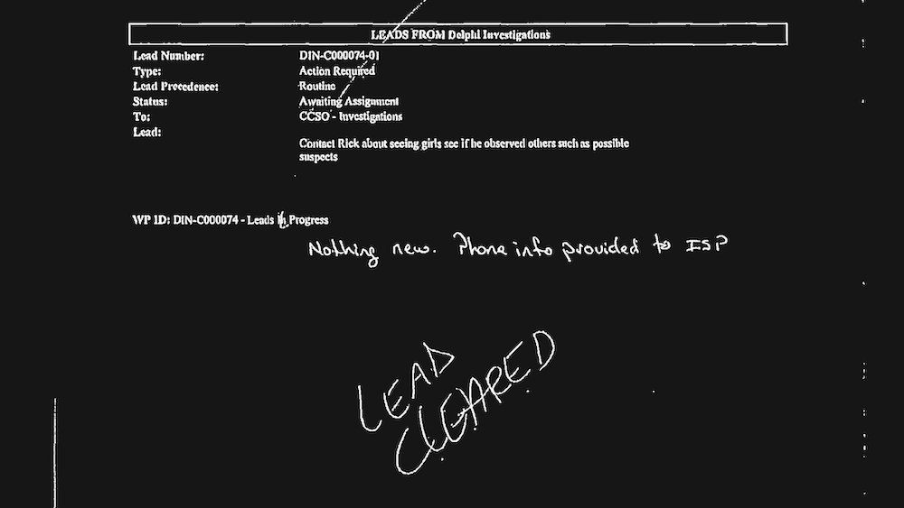

(un)Related Docket
On 12/02/2009, State of Indiana, by Deputy Prosecutor, files information and Affidavit as to : CT I CONVERSION, Class A Mis IC 35-43-4-3(a).
On 12/02/2009, State of Indiana, by Deputy Prosecutor, files information and Affidavit as to : CT I CONVERSION, Class A Mis IC 35-43-4-3(a).
Prosecuting Attorney, Bradley Cooper, by Deputy Prosecutor, files appearance on behalf of the State of Indiana. cat (RJO? N) | JTS Minute Entry Date: 12/03/2009.
Bond issued in the amount of $3,000 on 11/29/2009, by Adam Stoner. Power Bond No. BB-02336100 cat (RJO? N) | JTS Minute Entry Date: 12/03/2009.
Prosecuting Attorney, Bradley Cooper, by Deputy Prosecutor, files appearance on behalf of the State of Indiana. cat (RJO? N) | JTS Minute Entry Date: 12/03/2009.
Court GRANTS Order Determining Probable Cause per signed Order. Clerk is directed to issue SUMMONS for Initial Hearing and review of any pre-trial NCO on January 4, 2010 @ 08:30 AM. Defendant is ordered to appear. pjm (RJO? N) | JTS Minute Entry Date: 12/10/2009.
Clerk issues service by Summons to Johnson County Sheriff. TP (RJO? N) | JTS Minute Entry Date: 12/11/2009.
Clerk receives document for service processing. (RJO? N) | JTS Minute Entry Date: 12/11/2009.
Court enters return of Sheriff Service for Michael Jerome James. Said service was Perfected on 12-15-09 at 50 Bryant Court, Franklin, IN 46131. DMC. cs (RJO? N) | JTS Minute Entry Date: 12/21/2009.
State appears. Defendant appears pro se. Initial Hearing held. Court appoints the firm of HASS VANDIVIER & NORRIS to represent the Defendant. Court sets this matter for Pre-Trial Conference on February 10, 2010 @ 01:30 PM and Trial by Court on March 4, 2010 @ 09:00 AM. Defendant is ordered to appear on said dates. pjm (RJO? N) | JTS Minute Entry Date: 01/04/2010.
John Norris appointed as Public Defender.
Session: 02/10/2010 @ 01:30 PM.
State appears. Defendant appears in person and by counsel, LARRY GESSE. John Norris is hereby withdrawn as Public Defender. Defendant requests continuance of Pretrial date, same granted. Pretrial is reset for February 24, 2010 at 01:30 PM. Trial by Court remains set for March 4, 2010 @ 09:00 AM. Defendant is ordered to appear. (notice)se (RJO? N) | JTS Minute Entry Date: 02/10/2010.
Session: 02/24/2010 @ 01:30 PM.
Parties agree pursuant to I.C. 33-14-1-7 that prosecution shall be withheld upon completion of the Pretrial Diversion Program. Defendant shall comply with the terms of the Pretrial Diversion Agreement on or before 1 year from today. Compliance hearing is set for February 17, 2011 @ 3:00 PM. Defendant is ordered to appear, unless case has been dismissed.
Clerk is directed to release any bond in this case and any cash bond is to be applied towards fees. Any No Contact Order issued as a condition of bond is dismissed. New No Contact order will issue if ordered as a condition of Pre-Trial Diversion. se (RJO? N) | JTS Minute Entry Date: 02/24/2010.
Session: 03/04/2010 @ 09:00 PM. Reason: Parties agree pursuant to I.C. 33-14-1-7 that prosecution shall be withheld upon completion of the Pretrial Diversion Program.
State of Indiana files Notice of Revocation of Pretrial Diversion Agreement. se (RJO? N) | JTS Minute Entry Date: 04/12/2010.
Court GRANTS Order to Revoke Pretrial Diversion Agreement, per signed order. Case is set for Pretrial on April 26, 2010 @ 08:30 AM. along with other pending case. Defendant is ordered to appear. se (RJO? N) | JTS Minute Entry Date: 04/13/2010.
Session: 04/26/2010 @ 08:30 AM.
State appears. Defendant appears Pro Se. Pretrial hearing is held. Defendant requests public defender. Same GRANTED. Court appoints the firm of HASS, VANDIVIER AND NORRIS. Court sets this matter along with other pending case for Pretrial hearing on June 3, 2010 @ 01:30 PM and Trial by Court on June 24, 2010 @ 09:00 AM. Defendant is ordered to appear. (notice) pjm (RJO? N) | JTS Minute Entry Date: 04/26/2010.
Defendant requests public defender. Same GRANTED. Court appoints the firm of HASS, VANDIVIER AND NORRIS. Court sets this matter along with other pending case for Pretrial hearing on June 3, 2010 @ 01:30 PM and Trial by Court on June 24, 2010 @ 09:00 AM. Defendant is ordered to appear. (notice) pjm (RJO? N) | JTS Minute Entry Date: 04/26/2010.
Session: 06/24/2027 @ 01:30 PM.
By Pretrial Entry: State appears. Defendant appears in person, and by counsel, JOHN NORRIS. Defendant requests a continuance, same GRANTED. Case is reset for Pretrial on July 15, 2010 @ 01:30 PM and Trial by Court on August 12, 2010 @ 09:00 AM along with 41D03-1004-CM-00310. Defendant is ordered to appear. (notice) lam (RJO? N) | JTS Minute Entry Date: 06/03/2010.
Session: 06/24/2010 @ 09:00 AM. Judicial Officer: Roesener, Andrew S. Reason: Rescheduled for 08/12/2010 @ 09:00 AM.
Session: 07/15/2027 @ 01:30 PM. Judicial Officer: Roesener, Andrew S.
Conversion Unknown.
State appears. Defendant appears in person and by counsel, JOHN NORRIS. Defendant pleads GUILTY to Count I, Conversion, Class A Misdemeanor. Sentence is: 365 days, 10 days executed with credit for 10 days (5 actual), 355 days suspended to Active Probation. 32 hours Community Service Work, Behavior Modification Program
Def. to pay all applicable fees, $164.00 Court Costs, $100.00 Public Defender Fee. se (DISPOSED: GP ) (RJO? N) | JTS Minute Entry Date: 07/15/2010.
Defendant appears in person for Probation Rules. kss (RJO? N) | JTS Minute Entry Date: 07/16/2010.
Clerk releases Power Bond BB02336100 to Adam Stoner, disposed 07/15/2010. ph (RJO? N) | JTS Minute Entry Date: 07/19/2010.
Clerk receives document for service processing. (RJO? N) | JTS Minute Entry Date: 07/19/2010.
Clerk processes Order dated 07/15/2010. OB 85 PG 135. ph (RJO? N) | JTS Minute Entry Date: 07/19/2010.
Clerk enters judgment per court order dated 07/15/10. $164.00 court costs. bw (RJO? N) | JTS Minute Entry Date: 07/20/2010.
Clerk enters judgment per court order dated 07/15/10. $100.00 Public Defender Supplemental Fund. bw (RJO? N) | JTS Minute Entry Date: 07/20/2010.
Session: 08/12/2027 @ 09:30 AM. Judicial Officer: Roesener, Andrew S. Reason: Plea agreement.
Court directs the Clerk to issue a Warrant/No Bond for the Defendant.
Initial Hearing scheduled for 10/08/2026 @ 11:00 AM.
This matter comes before the Court on the “Johnson County, Indiana Camera in Court Request Form” filed by Kyle Thomas, WTHR Channel 13 on October 5, 2026. The Court, after being duly advised in the premises, now finds that the request is DENIED.
This matter comes before the Court on the “Johnson County, Indiana Camera in Court Request Form” filed by Max Lewis, WXIN-TV on October 5, 2026. The Court, after being duly advised in the premises, now finds that the request is DENIED.
Session: 10/08/2026 @ 11:00 AM. Judicial Officer: Roesener, Andrew S. Result: Commenced and concluded.
Status of Counsel Hearing scheduled for 11/02/2026 @ 9:00 AM.
Pretrial Conference scheduled for 12/10/2026 @ 9:00 AM.
Jury Trial scheduled for 01/12/2027 @ 08:00 AM.
The State appears by its Prosecuting Attorney, Lance Hamner, Esq. and by its Deputy Prosecutor, Matthew Kubacki, Esq. The Defendant appears in person, in custody and pro-se. Rights advisement is conducted. The initial hearing is commenced and concluded. A preliminary plea of not guilty is entered. The matter is set for Status of Counsel Hearing on November 2, 2026 @ 09:00 AM. The Defendant will appear remotely. The matter is set for Pretrial/Omnibus Hearing on December 10, 2026 @ 09:00 AM and for Trial by Jury on January 12, 2027 @ 08:00 AM The Defendant is ordered to appear on each date. Judicial Officer: Roesener, Andrew S.
The court is in receipt of the four (4) page submission from Johnson County Sheriff Duane Burgess filed with the court on October 12, 2026. The court interprets the submission as a request for protective transfer filed pursuant to I.C. 35-33-11. The court has received a response to the request, filed October 13, 2026, from Brown County Sheriff Brad Stogsdill. Sheriff Stogsdill has agreed to accept the transfer of the Defendant to the Brown County Jail. The court grants the Johnson County Prosecutor's Office until close of business on Friday October 16, 2026 to respond to the requested transfer. The court concludes that an attorney should be appointed for the Defendant in order that the Defendant may receive counsel on the legal basis for this request and other considerations attendant to a transfer from the Johnson County Jail. The court appoints Dorie Maryan, Esq. as pauper counsel for the Defendant. This appointment does not interfere with the Defendant's right to retain private counsel. The matter remains set for: Status of Counsel Hearing on November 2, 2026 @ 09:00 AM; Pre-trial/Omnibus hearing December 10, 2026 @ 09:00 AM; and Trial by Jury on January 12, 2027 @ 08:00 AM.
Notice Issued ---- 10/13/2026: Dorothy A Maryan; Matthew Michael Kubacki; Lance Dalton Hamner; Shaina Elisabeth Carmichael.
The court is in receipt of the Defendant's "Motion for Discovery and Inspection" filed October 15, 2026. Rule 2.5(A) of the Indiana Rules of Criminal Procedure provides, in pertinent part, that the parties to a criminal matter must endeavor to share discoverable information without court involvement and that a written discovery motion is required only in limited circumstances. Based upon the foregoing, the court declines, at this time, to take any action on the Defendant's "Motion for Discovery and Inspection". Should the parties reach an impasse on matters of pre-trial discovery, then a motion identifying the issues in controversy and a request for the intervention of the court may be filed by either party.
The appearance of private counsel has been filed on behalf of the Defendant. The court, as a result, terminates the representation of Dorie Maryan, Esq. and vacates the status of counsel hearing scheduled for November 2, 2026 @ 09:00 AM Counsel for the Defendant is granted until close of business on October 21, 2026 to respond to the request for the protective transfer of the Defendant filed by the Johnson County Sheriff.
Status of Counsel Hearing scheduled for 11/02/2026 @ 09:00 AM was cancelled. Reason: Other.
This matter comes before the court on the Johnson County Sheriff's request for authorization to transfer and transport Michael Jerome James filed with the court on October 12, 2026. The Court, after being duly advised in the premises, now FINDS and ORDERS as follows: 1. On October 12, 2026 the court received correspondence from the Johnson County Sheriff, Dwayne Burgess, requesting authorization to transfer the Defendant to the Brown County Jail during pendency of the above cause of action. 2. On October 13, 2026 the court received correspondence from Brown County Sheriff, Brad Stogsdill, accepting transfer of the Defendant to the Brown County Jail. 3. On October 16, 2026 the court received both the State of Indiana's “Response to Request for Protective Transfer” and the Defendant's “Notice of Non-Objection to Transferring the Accused from the Johnson County Jail to the Brown County Jail for His Own Physical and Mental Wellbeing and Safekeeping.” 4. The court concludes that based upon the consent of the parties that a lawful basis exists for the requested transfer [See I.C. 35-33-11-1]. 5. Based upon the foregoing, the court ORDERS the Johnson County Sheriff to promptly transfer the Defendant to the custody of the Brown County Jail. The Johnson County Sheriff shall deliver to the Brown County Sheriff a certified copy of this order as well as a current medical report, if available, and other data required pursuant to I.C. 35-33-11-6. 6. The Defendant remains held without bond.
Session: 11/02/2026 @ 09:00 AM. Reason: Other. Comment: Remote.
Attachment: Exhibit A
Exhibt A | Annotated Motion showing the differences between the two Motions to Dismiss.
Notice Issued (The court is in receipt of the "Accused's Verified Motion to Dismiss Indictment" filed November 10, 2026. This matter is set for a Pretrial/ Omnibus Hearing on December 10, 2026 and Trial by Jury on January 12, 2027. The State of Indiana is granted the opportunity to file a responsive motion and memorandum of law. In the event the State has not filed a responsive motion and memorandum by the December 10, 2026 pretrial / omnibus date, then the court will establish a prospective deadline for the filing of the same at the December 10th hearing. eh)
The court is in receipt of the "Accused's Amended Verified Motion to Dismiss Indictment" filed November 16, 2026. The court has read the "Accused's Verified Motion to Dismiss Indictment" filed November 10, 2026. In order to promote the efficient use of the court's time, the court concludes that a telephonic attorney-status conference should be conducted to permit counsel for the Defendant to advise the court of the amendments contained in the November 16, 2026 submission. The court's intention is that this hearing will be attorney-only and off the record. Should either or both parties request that the hearing be conducted on-the-record and/or that the Defendant be present for the status conference, a motion to that effect should be filed with the court. eh
The Court is in receipt of the "State's Motion for Protective Order Under Indiana Rule of Trial Procedure 26(C)" filed November 13, 2026. The Court sets the motion for hearing on December 10, 2026 @ 09:00 AM along with the Pretrial Hearing set herein. blv
Session: 12/10/2026 @ 09:00 AM. Judicial Officer: Roesener, Andrew S.
Hearing on: State's Motion for Protective Order Under Indiana Rule of Trial Procedure 26(C) (filed 11/13/2026); Accused's Amended Verified Motion to Dismiss Indictment (filed 11/16/2026).
Session: 01/12/2027 @ 08:00 AM. Judicial Officer: Roesener, Andrew S.